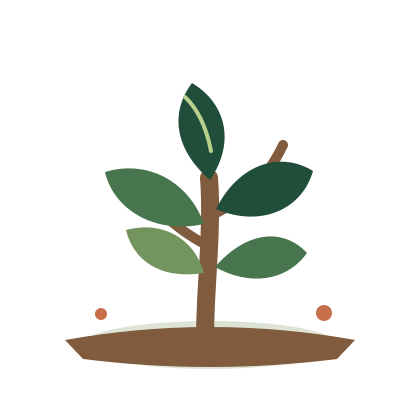

Histórias em imagens
Galeria
Um espaço visual para registrar a natureza, a participação comunitária e as etapas de restauração.



🌿 Ecossistemas nativos
🤝 Comunidade em ação
💧 Cuidado com as nascentes
🦋 Biodiversidade local
🌳 Crescimento ao longo do tempo